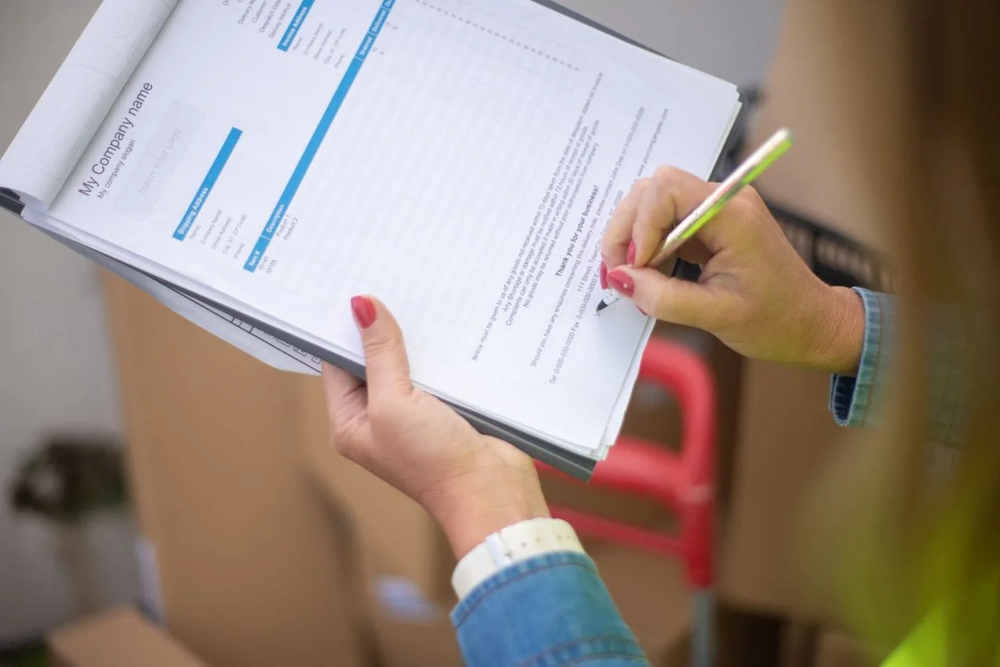
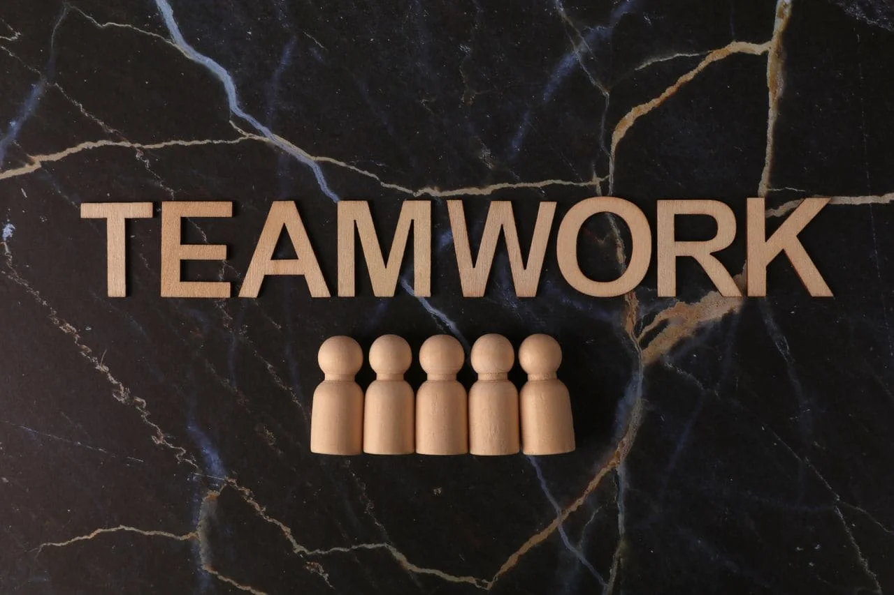

ШУКАЄМО СИЛЬНИХ ЛЮДЕЙ У КОМАНДУ
Ми будуємо та розвиваємо нові проєкти у Швейцарії й шукаємо людей, які хочуть створювати, впливати та зростати разом із нами.
Нам важливі не лише дипломи та записи у CV.
Ми цінуємо мислення, відповідальність, швидкість, ініціативу та здатність доводити справу до результату.
Project Manager — керівник проєктів
Вам належить вести проєкти від ідеї до реалізації.
Ваша зона відповідальності:
- планування та запуск нових проєктів;
- формування і координація команди;
- управління строками, бюджетами та пріоритетами;
- переговори з партнерами, клієнтами та підрядниками;
- контроль виконання та відповідальність за кінцевий результат.
Ми шукаємо: самостійну, системну та амбітну людину, яка не чекає постійних інструкцій, а бачить завдання, знаходить рішення і рухає проєкт уперед.
Executive / Project Assistant — помічник керівника / проєктний асистент
Це позиція для людини, яка хоче бути безпосередньо всередині процесів, працювати поруч із керівником та поступово брати на себе більше відповідальності.
Ваші завдання:
- організація щоденної роботи та зустрічей;
- ведення ділової комунікації;
- робота з документами та інформацією;
- координація доручень і контроль строків;
- взаємодія з партнерами та виконавцями;
- підтримка запуску та розвитку нових проєктів.
Для нас важливі надійність, інтелект, швидкість навчання, організованість та ініціативність.
НЕ ШУКАЙТЕ ПРОСТО РОБОТУ.
ЗНАЙДІТЬ ПРОЄКТ, У ЯКОМУ МОЖНА ВИРОСТИ.
Якщо вам близький такий підхід — розкажіть нам про себе.
ПРИЄДНАТИСЯ ДО КОМАНДИ